Data Visualisation with R
Session 2 · Grammar of Graphics — Aesthetics, Geoms & Facets
SARA Institute of Data Science
2026-07-21
Welcome back!
- Session 1 recap:
ggplot(data, aes(x, y)) + geom_...() - Today we go deeper into the grammar:
- more aesthetics (size, shape, alpha, transparency)
- more geoms (histogram, boxplot, density, smooth line)
- facets — many small plots from one line of code
- By the end: you’ll be able to explore almost any dataset visually
Quick recap exercise (5 min)
Recreate this from memory (don’t peek at Session 1 notes yet!):
A scatter plot of
bill_length_mm(x) vsbill_depth_mm(y), coloured byspecies.
Session 2 roadmap
| Time | Topic |
|---|---|
| 0–10 min | Recap + more aesthetics (size, shape, alpha) |
| 10–25 min | Trend lines with geom_smooth() |
| 25–45 min | Distributions: histograms & density plots |
| 45–65 min | Comparing groups: boxplots |
| 65–85 min | Facets — small multiples |
| 85–90 min | Wrap-up |
More Aesthetics
Beyond colour: size, shape, and alpha
Aesthetics aren’t limited to x, y, and color. We can also map data to:
size— bigger/smaller pointsshape— different point symbolsalpha— transparency (0 = invisible, 1 = solid)
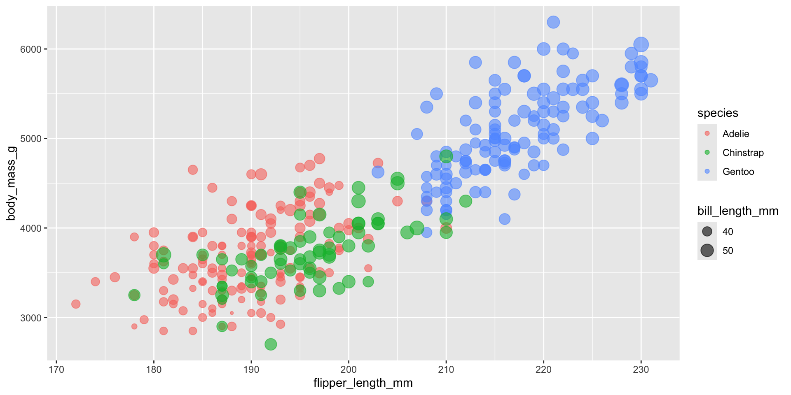
Notice: alpha = 0.6 is set outside aes(), directly inside geom_point(). That’s because we’re not mapping it to a variable — we’re setting one fixed value for every point. This is a key distinction in ggplot2.
Mapped vs. fixed — the golden rule
Inside aes() |
Outside aes() |
|---|---|
| Value comes from a column in your data | Value is the same for every point |
aes(color = species) |
color = "steelblue" |
aes(size = bill_length_mm) |
size = 3 |
| Varies per row | Fixed by you |
Your Turn 1 (7 min)
- Plot
bill_length_mmvsbill_depth_mm - Map
shapetospecies - Set a fixed
alpha = 0.5andsize = 2(not mapped — just typed directly)
Trend Lines
Adding a trend line with geom_smooth()
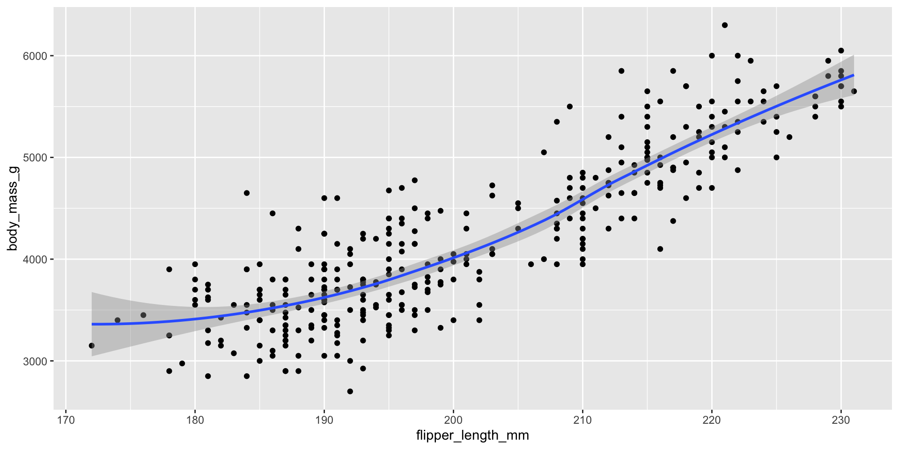
Two geoms, one plot — this is layering. geom_smooth() fits a curve through the data (a “loess” curve by default) with a shaded confidence band.
A straight-line trend instead
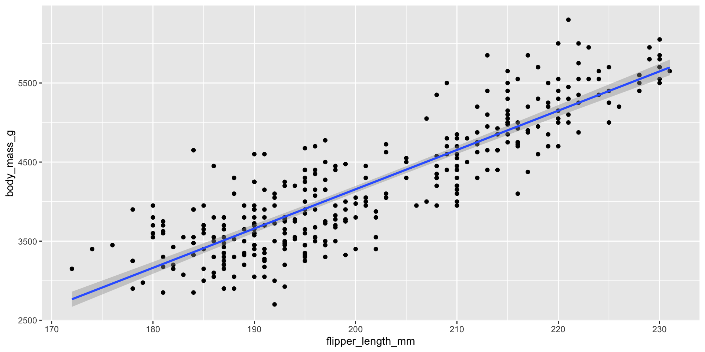
method = "lm" fits a straight linear model instead of a curve — useful when you specifically want to show a linear relationship.
Trend lines per group
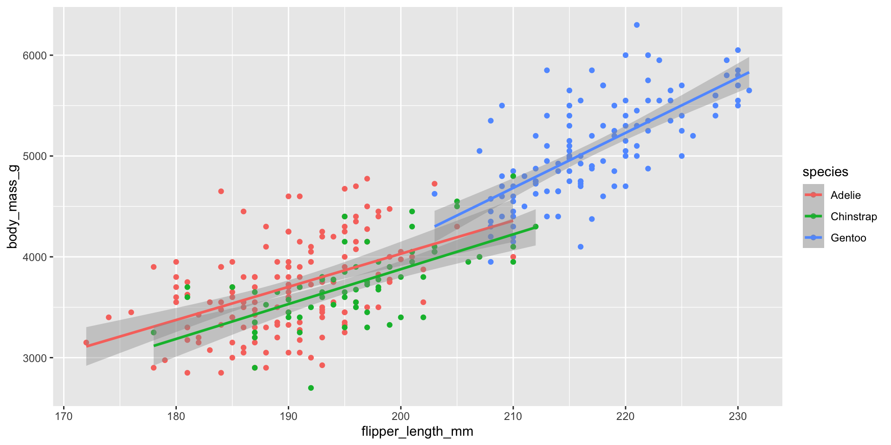
Because color = species was set in the shared aes(), both geom_point() and geom_smooth() inherit it — giving us one trend line per species automatically!
Your Turn 2 (8 min)
Plot bill_length_mm (x) vs bill_depth_mm (y):
- Points coloured by
species - Add a linear (
"lm") trend line — one per species
What do you notice about the overall trend vs. each species’ trend? (This is a classic case of Simpson’s Paradox!)
Answer
ggplot(penguins, aes(x = bill_length_mm, y = bill_depth_mm, color = species)) +
geom_point() +
geom_smooth(method = "lm")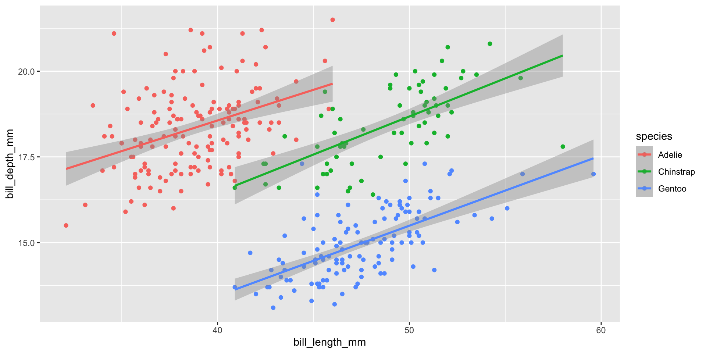
Overall, bill length and depth look negatively related — but within each species, the relationship is positive! Always check whether hidden groups are driving a trend.
Exploring Distributions
Histograms — one numeric variable
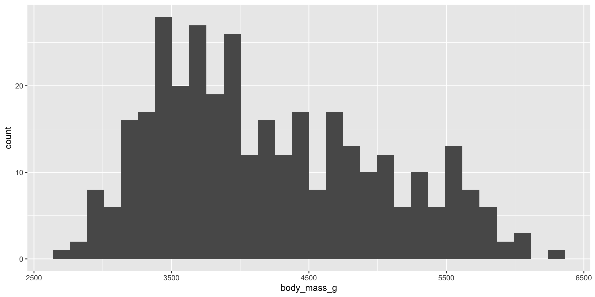
R gives a friendly warning about bin count — histograms group numeric values into bins and count how many rows fall in each.
Controlling bin width
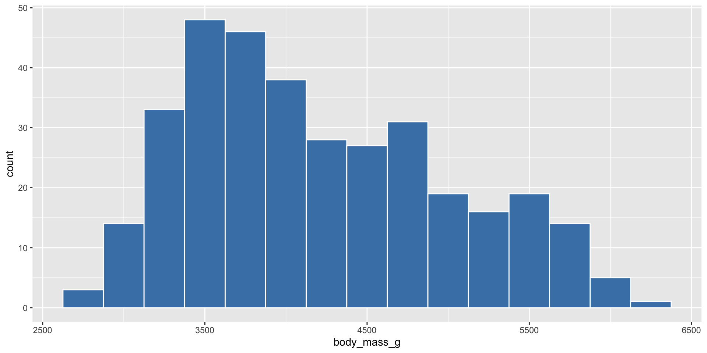
- Smaller
binwidth→ more detail, more noise - Larger
binwidth→ smoother, but may hide real patterns - There is no single “correct” binwidth — try a few!
Histograms by group
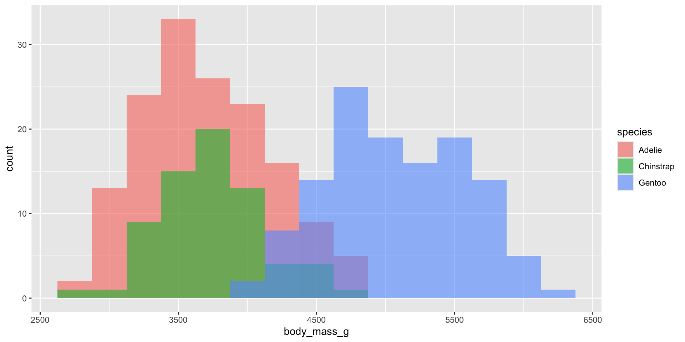
position = "identity" lets the three histograms overlap rather than stack — combined with alpha, we can see all three at once.
Density plots — a smooth alternative
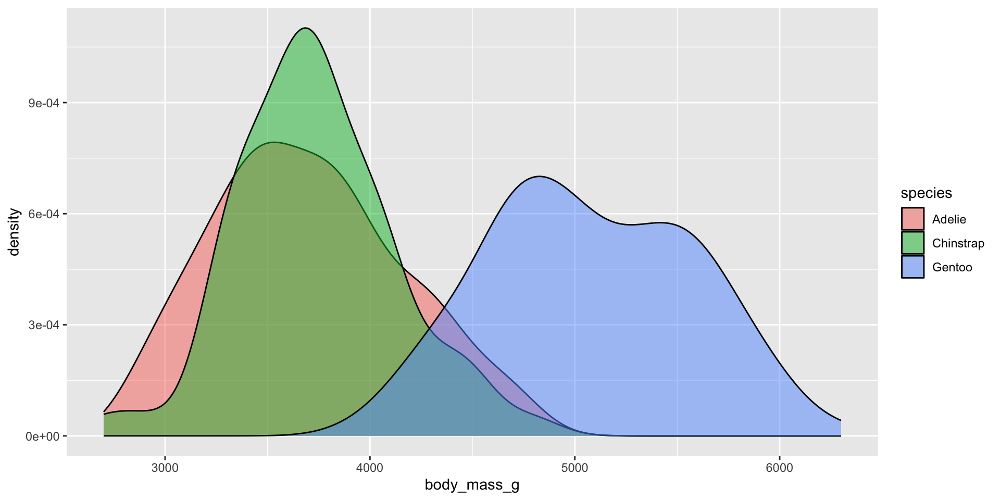
A density plot is like a smoothed histogram — useful for comparing shapes of distributions across groups without worrying about binwidth.
Your Turn 3 (8 min)
- Make a histogram of
flipper_length_mmwithbinwidth = 5 - Fill it by
species, withalpha = 0.6andposition = "identity"
Comparing Groups
Boxplots

Reading a boxplot:
- box = middle 50% of the data (25th–75th percentile)
- thick line = median
- whiskers = typical range
- dots beyond whiskers = potential outliers
Boxplots with colour
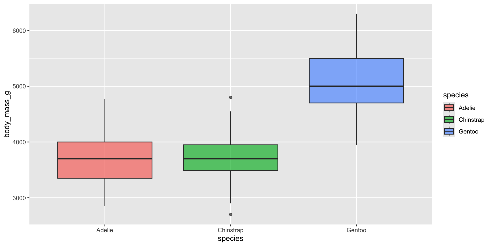
Adding fill = species is slightly redundant with x = species here, but it makes group boundaries easier to see at a glance, especially in printed handouts.
Adding raw data points on top
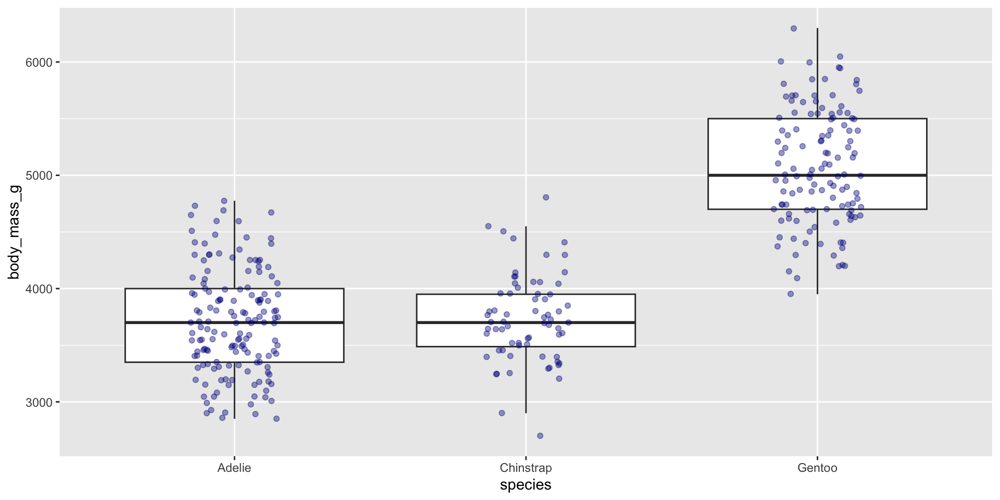
geom_jitter() nudges overlapping points sideways randomly so we can see individual data — this shows both the summary (boxplot) and the raw data (jittered points) together.
Your Turn 4 (8 min)
Make a boxplot of flipper_length_mm by species, filled by species, with jittered points on top.
Facets — Small Multiples
The problem facets solve
- Sometimes colour alone gets too crowded with 3+ groups, or we want groups fully separated, not overlapping
- Facets split one plot into a grid — one panel per category
facet_wrap() — one variable
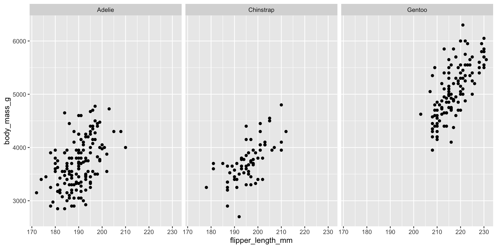
The ~species means “split by species.” Each panel shows the same x/y axes, just filtered to one species’ data.
facet_grid() — two variables at once
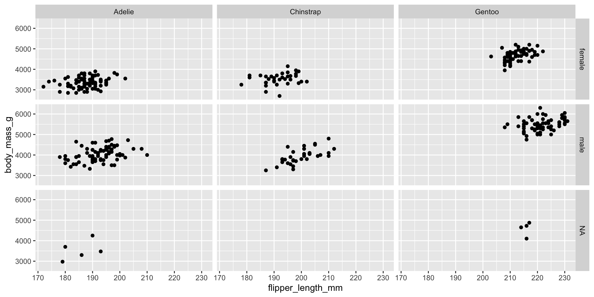
facet_grid(rows ~ columns) creates a full grid: rows = sex, columns = species. Great for comparing two categorical variables simultaneously. (Note: a few penguins have missing sex — we’ll handle missing data more in Session 3.)
Combining facets with colour
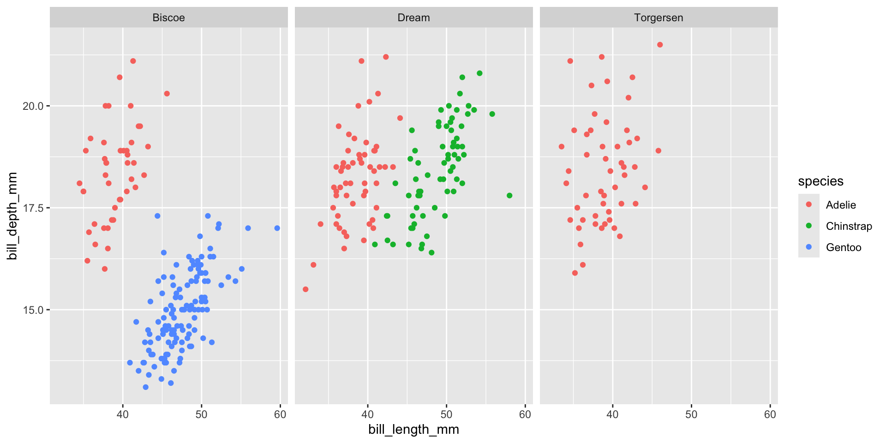
Facets and aesthetics work together nicely — here we see, per island, how species separate by bill measurements.
Your Turn 5 (10 min)
- Make a histogram of
body_mass_g - Facet it by
speciesusingfacet_wrap() - Bonus: also facet by
sexusingfacet_grid(sex ~ species)
Recap — Session 2
- Aesthetics mapped inside
aes()vary by data; values set outsideaes()are fixed geom_smooth()adds trend lines — watch for group-level reversals (Simpson’s Paradox!)geom_histogram()/geom_density()show the shape of one numeric variablegeom_boxplot()compares a numeric variable across groups;geom_jitter()shows raw data on topfacet_wrap(~var)andfacet_grid(row ~ col)split one plot into small multiples
Before Session 3
Practice at home:
Next session: Titles & labels, themes, custom colour palettes, coord_flip(), and — crucially — saving your plots with ggsave() so they’re ready for your paper, poster, or presentation.
Thank you!
Session 2 complete 🎉
SARA Institute of Data Science — building open, first-generation, Ambedkarite research capacity, one dataset at a time.
SARA Institute of Data Science · R for Researchers